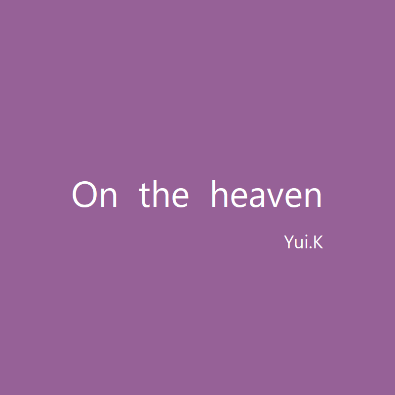
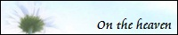
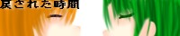
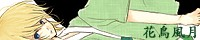
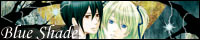
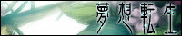
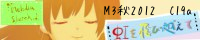
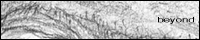
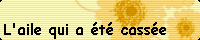

What' New新着情報
- 2018/05/29
- Worksにお仕事1件追加NEW
- 2018/05/28
- サイト改装NEW
- 2012/10/12
- WORKにお仕事1件追
- 2012/08/01
- ABOUT内容一部改定、WORK内容一部修正
» 過去ログ
お知らせ
お知らせが遅くなってしまったのですが、漣さんのお誘いで歌唱参加させて頂いております。
15thシングル「紫苑－シオン－」公開中です！（カテゴリ：song→それぞれのページにて試聴可能）
その他歌唱参加曲：8th「僕の紙ヒコーキ」/9th「ずっとずっと君が好き」/10th「永遠dreamer」/14th「指輪」
About当サイトについて
必ずお読みください
当サイトでは、花月 唯が歌唱･製作した楽曲を公開しております。
バナーを除く全ての楽曲、文章、画像の無断DLは禁止です。
如何なる問題が発生した場合も、当サイトは一切の責任を負いません。
お問い合わせ等ございましたら、下記メールアドレスよりお送りください。
MAIL＞＞kdyui_sakikobore*yahoo.co.jp （*→@）
PROFILE
NAME＞＞花月 唯（かづき ゆい） Twitter
BIRTHDAY＞＞1991/5/18
BLOOD＞＞A型
HOBBY＞＞漫画・アニメ鑑賞、イベント・ライブ鑑賞
ABOUT LINK
SITENAME＞＞On the heaven
URL＞＞http://ontheheaven.siromuku.com/
BANNER＞＞

Musics
Songs new↑↓old
| Innocence | 作詞：花月 唯 作曲：[VARS]唐戸直也 歌：花月 唯 » 歌詞 2009年10月収録 |
|---|---|
| 50％ ＆ 50％ | 作詞：荒瀬季夜 作曲：苑原いつき 歌：花月 唯 2009年1月収録 |
| 陽だまりの唄 | 作詞：荒瀬季夜 作曲：苑原いつき 歌：花月 唯 2008年4月収録 |
| PROPERTY | 作詞：KANAE 作曲：武井友樹 歌：花月 唯 提供：-1Track 2008年2月収録 |
| alive ～届かぬこの想い～ | 作詞･作曲：たく 歌：花月 唯 提供：-1Track 2008年2月収録 |
| キズアト 新Ver | 作詞･作曲：しゃな 歌：花月 唯 提供：-1Track 2008年2月収録 |
| LOVETHING | 作詞：花霄 陵 作曲：KOUICHI 歌：花月 唯 提供：魔王魂 2007年7月収録 |
| 風待(カゼマチ) | 作詞：花月 唯 作曲：カエ 歌：花月 唯 提供：CONSIDER » 歌詞 2007年7月収録 |
| Daybreak | 作詞：花月 唯 作曲：SAM 歌：花月 唯 提供：-1Track » 歌詞 2007年7月収録 |
| Start Up ! | 作詞：小宮真央 作曲：CHRIS 歌：花月 唯 提供：ぼいさん。 2007年3月収録 |
| LOVE☆BEAM | 作詞：Revi･ripple 作曲：ripple 歌：花月 唯･花霄 陵 提供：-1Track 2007年1月収録 |
| 眠り姫 | 作詞･作曲：KTG 歌：花月 唯 提供：-1Track 2007年1月収録 |
| YOU | 作詞･作曲：YUYU 歌：花月 唯 提供：-1Track 2006年11月収録 |
| snow again | 作詞･作曲：YUYU 歌：花月 唯 提供：-1Track 2006年10月収録 |
| illumina | 作詞･作曲：しゃな 歌：花月 唯 提供：-1Track 2006年8月収録 |
| メグメル ～オケアレンジショートVer.～ | アレンジ：Nonchan 歌：花月 唯 提供：-1Track 2006年6月収録 |
MIDI ・・・過去にTOPに載せていたBGM
| 別れ 始まり | 06/05/12 |
|---|---|
| 冷風灼熱ノ森 | 06/06/01 |
| 死者へ捧げる光 | 06/07/02 |
| 妖舞人形 | 06/08/01 |
| 微風の吹く夜 | 06/09/02 |
| 月光に集う者達 | 06/10/01 |
| 残った温もり | 06/11/01 |
| 静寂な息吹 | 06/12/01 |
| skysea-流星海 | 07/01/01 |
| 都心回路 | 07/02/01 |
| bird of passage | 07/03/01 |
| precious thing | 08/01/13 |
| precious thing 別ver | 08/02/22． |
KARAOKE ・・・過去に提供していたカラオケ素材
| J.Rain | 作詞：花月 唯 作曲：花月 唯 歌：花月 唯 » 歌詞 |
|---|---|
| J.Rain(ガイドメロディVer) | |
| laguz | 作詞：放浪人 作曲：花月 唯 歌：花月 唯 |
| laguz(ガイドメロディVer) |
Works
ご依頼について
現在、歌唱・作詞の依頼を受け付けております。
◆歌唱◆
歌曲のテーマやご要望等ございましたら詳しく教えて頂ければと思います。
ミキシングにつきましては当方で担当する事も可能ですが、生憎編集方面の技術には自信がございませんので、完成度の保証は致しかねます。それでもよろしければお引き受け致しますので、ご依頼の際にミキシングについて希望の有無をご記入ください。
◆作詞◆
歌唱依頼と同様、テーマやご要望等ございましたらお申し付け下さい。
※作曲依頼につきましては、勝手ながら管理人多忙の為2007年6月末までの受付と致しました。
また時間に余裕ができましたら再開したいと思っております。
ご依頼はメールにて受け付けております。件名には「依頼について」とご記入の上お送りください。
Mail ： kdyui_sakikobore*yahoo.co.jp （*→@）
過去のお仕事履歴 old↑↓new
オケ素材｢Laguz｣提供 |
|
OP作曲 |
|
主題歌作曲 |
|
主題歌歌唱 |
|
 |
オケ素材｢J.Rain｣お手本版、編曲版使用 |
オケ素材｢J.Rain｣使用 |
|
中村ミカ役CV |
|
 |
OP作曲 |
主題歌歌唱 |
|
オケ素材｢J.Rain｣お手本版使用 |
|
オケ素材｢J.Rain｣を使用 |
|
ED歌唱 |
|
オケ素材｢J.Rain｣お手本版使用。 |
|
 |
ゲストボーカルとして1曲歌唱 |
主題歌作詞・歌唱 |
|
ED歌唱 |
|
 |
ED2曲歌唱 |
 |
Tr6「明日へ」作詞・歌唱 |
8th「僕の紙ヒコーキ」/9th「ずっとずっと君が好き」/10th「永遠dreamer」/ 14th「指輪」/15th「紫苑－シオン－」 |
Link
お気に入りの素敵サイト様
数が多く、その一つ一つが素敵なサイトです。 |
|
 |
プロのような曲達。普通にCDを聴いてる気分になります。 |
 |
歌やMIDI素材など幅広く活動している大尊敬する方。 |
riko様･ゆん様のベストペアが最高の楽曲を作っています。 |
|
コピー曲が原曲そのままに、秋月様の素敵な歌声が響きます。 |
|
可愛らしい透き通った歌声の方です。｢flowed｣大好きです。 |
|
 |
お友達の、歌のお姉さん(笑)声がとても素敵な方です。 |
私には絶対に真似できない歌声の持ち主。尊敬します。 |